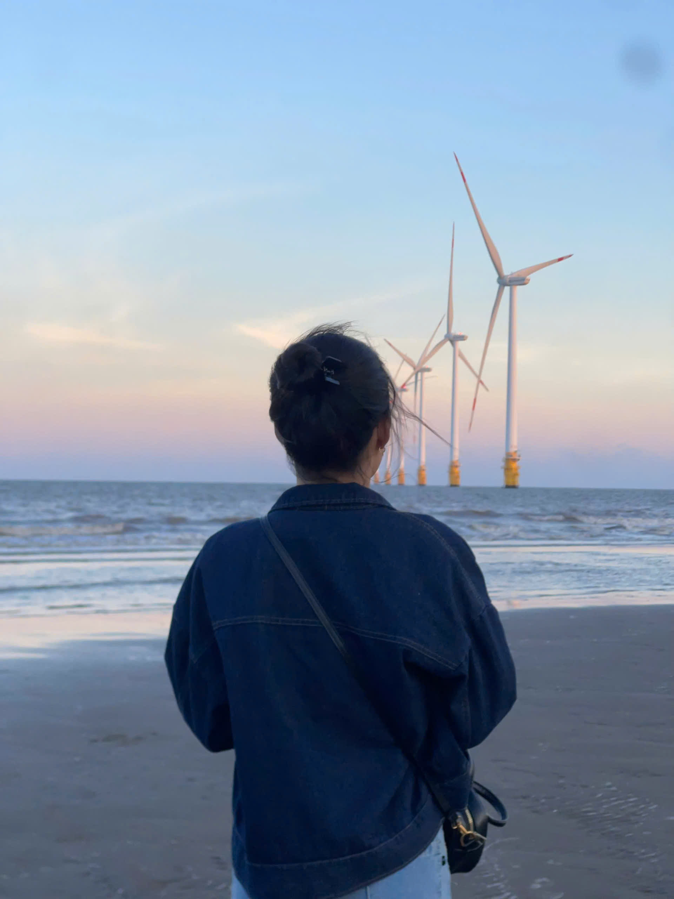
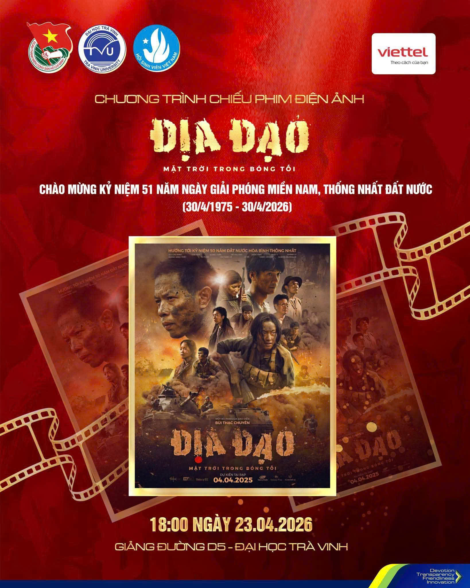
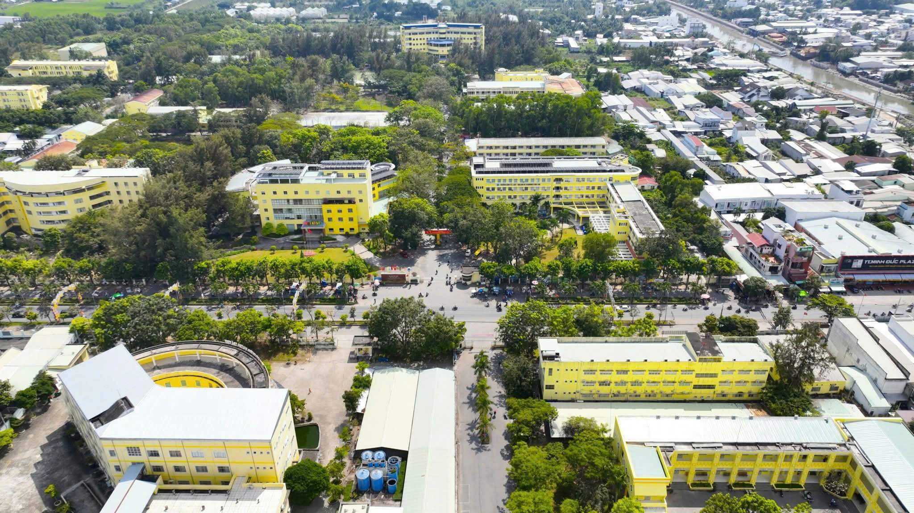
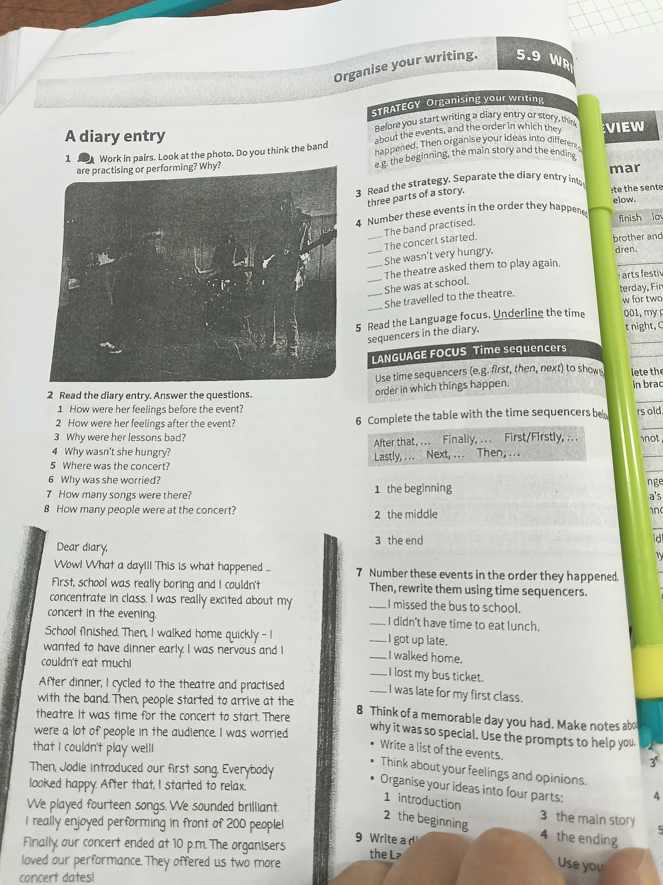

GIỚI THIỆU BẢN THÂN
THẠCH THỊ QUÍ
Một số thông tin
Là một sinh viên năm nhất ngành công nghệ thông tin của trường Kĩ Thuật và Công nghệ thuộc Đại Học Trà Vinh

Thông tin liên hệ:
Sở thích cá nhân
Học vấn
TRẢI NGHIỆM KHI HỌC TẬP VÀ LÀM VIỆC TẠI TRƯỜNG
Khi học tập tại trường không những em được học tập còn được nhà trường tạo không gian giải trí cho sinh viên sao những tuần học tập mệt mỏi bằng việc chiếu phim địa đạo nhân dịp 30/4 Ngày Giải phóng miền Nam Việt Nam, thống nhất đất nước.Không những là giải trí mà còn giúp cho các bạn sinh viên biết được các ông cha ta xưa đã khỏ cực cố gắng hy sinh giành lại non sông đất nước cho chúng ta.

Đại Học Trà Vinh
Là một ngôi trường xanh, sạch, đẹp và có chất lượng đào tạo tốt. Sau một thời gian học tập tại trường đã có nhiều sự thay đổi bất ngờ từ trường Đại học Trà Vinh nay đã thành Đại Học Trà Vinh. Không những thế trường còn có đội ngũ giảng viên giỏi tận tình và có chuyên môn cao giúp sinh viên có thể theo kịp. Ngoài ra khi học tập tại đây còn có những người bạn người anh chị tận tình chỉ bải giúp đỡ nhau trong học tập lẫn trong cuộc sống.

CHIA SẺ
Là một sinh viên ngành công nghệ thông tin em hiểu được việc học lập trình một ngôn ngữ là điều tất yếu. Tuy là môn yêu thích nhưng đôi lúc nó không chỉ gặp khó khăn trong việc sai lỗi nhưng cách tìm lại khó nhọc vô cùng. Dù là thế nên em quyết định không từ bỏ.

Khó khăn trong học tập
Việc học tiếng anh đối với bậc Đại học vô cùng cần thiết nhưng nếu sinh viên không có tính tự giác trong học tập thì sẽ gặp không ít khó khăn dẫn đến việc ảnh hưởng rất nhiều đến ngành công nghệ coonng tin của chúng ta.